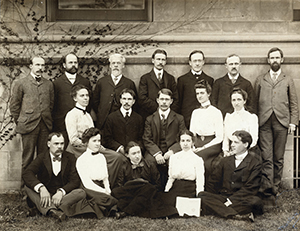
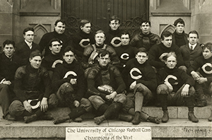
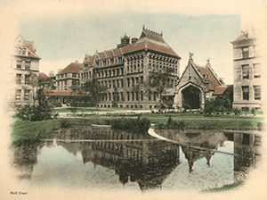

University Leadership
The University of Chicago: The Early Years
On July 9, 1890, the University’s founders defined what they believed would build an enduring legacy: a commitment to rigorous academics for people of all backgrounds, including “opportunities for all departments of higher education to persons of both sexes on equal terms.”
An initial pledge of $600,000 (more than $25 million in today’s currency) from John D. Rockefeller, along with contributions from the American Baptist Education Society and land from Marshall Field, helped to found the University of Chicago.
William Rainey Harper, the University’s first president, envisioned a university that was “‘bran splinter new,’ yet as solid as the ancient hills”—a modern research university that would combine an English-style undergraduate college and a German-style graduate research institute. The University’s first buildings were modeled after the English Gothic architectural style used at Oxford, complete with towers, spires, cloisters, and grotesques. The campus landscape was shaped by legendary landscape architect Frederick Law Olmsted’s designs for the 1893 World’s Columbian Exposition, which was just a short walk from where the University held its first classes.
Harper recruited the highest quality faculty possible, including several college presidents, who were drawn to the University of Chicago by the idea of a community of great scholars. In his address marking the University’s 1902 decennial, Harper reminded his audience of the University’s most important tradition: “Complete freedom of speech on all subjects,” he declared, “has from the beginning been regarded as fundamental in the University of Chicago. This principle can neither now nor at any future time be called in question.”
By 1910, the University had developed a variety of traditions, including a coat of arms bearing a phoenix emerging from the flames and a Latin motto, Crescat scientia; vita excolatur (“Let knowledge grow from more to more; and so be human life enriched”). In 1894, maroon had become the University’s official color and “the Maroons” its nickname.
In 1907, the University of Chicago’s first Nobel laureate, Albert A. Michelson—the first of many Nobel laureates from the University, as well as the first American to win a Nobel Prize in any of the sciences—was recognized for his breakthrough advancements in measuring the speed of light. Since then, University faculty, scholars, students, and alumni have been recognized with the highest international honors in their fields.
In 2006, current president Robert J. Zimmer said in his inaugural address, “If we take ourselves back to the University in its early years . . . many of us connected to the University feel that we might just as easily have been there.
“Why is this? The University of Chicago, from its very inception, has been driven by a singular focus on inquiry. Everything about the University of Chicago that we recognize as distinctive flows from this commitment.”
A more extensive history of the University of Chicago is available in The University of Chicago: A History, by historian John W. Boyer, Dean of the College since 1992.
A University of Chicago zoology class in 1901
The University’s football history is unique. The Maroons won six Big Ten football championships from 1899 to 1924. The original “Monsters of the Midway,” including coach Amos Alonzo Stagg (far left), are pictured here in 1899.
A view of the Anatomy Building, Cobb Gate, and Botany Pond, all of which were complete by 1903.